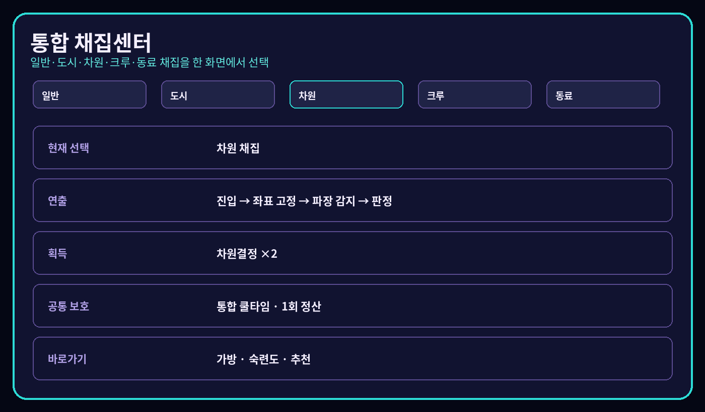
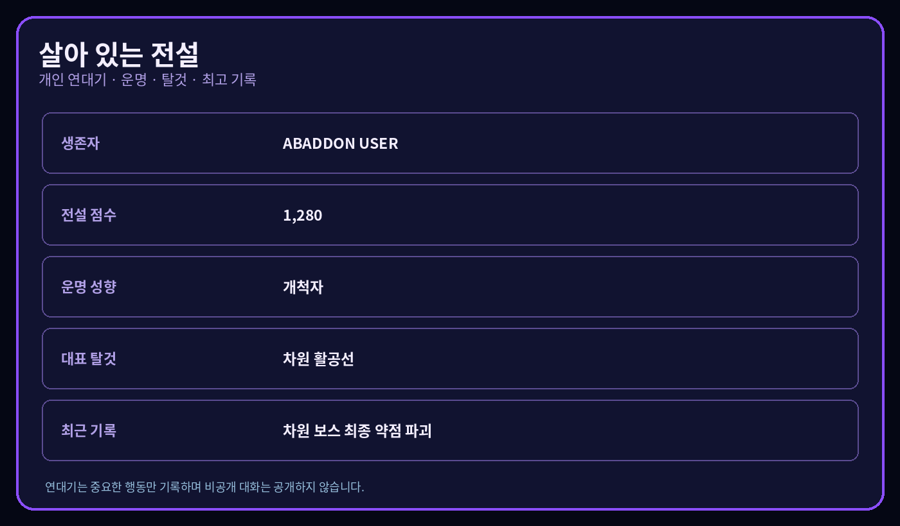

PUBLIC WORLD MAP · OPT-IN ONLY
BLACK CITY 공개 월드맵
서버 관리자가 공개를 명시적으로 켠 경우에만 개인 식별 정보가 제거된 도시 요약을 표시합니다.
V16.2.0 · LIVING LEGENDS
도시 행동이 개인 연대기와 탈것 해금으로 이어집니다
공개 설정을 켠 서버만 비식별 도시 요약을 표시합니다. 개인 잔액, 비공개 사건과 대화 기록은 공개하지 않습니다.


개인정보 보호
사용자 ID, 잔액, 범죄 기록, 비공개 아지트와 채널 정보는 공개 데이터에 포함하지 않습니다. 연결되지 않았을 때는 가짜 수치 대신 연동 대기로 표시합니다.
연동 대기
공개 서버 데이터를 확인하고 있습니다.